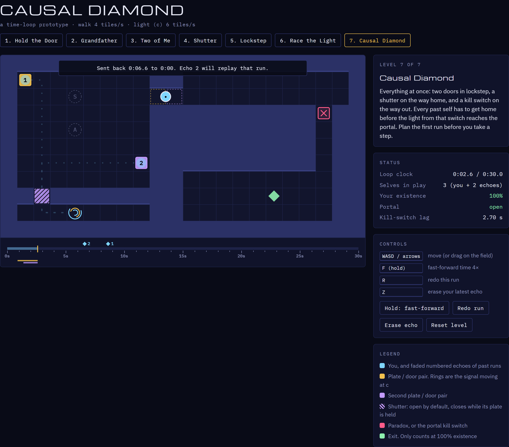
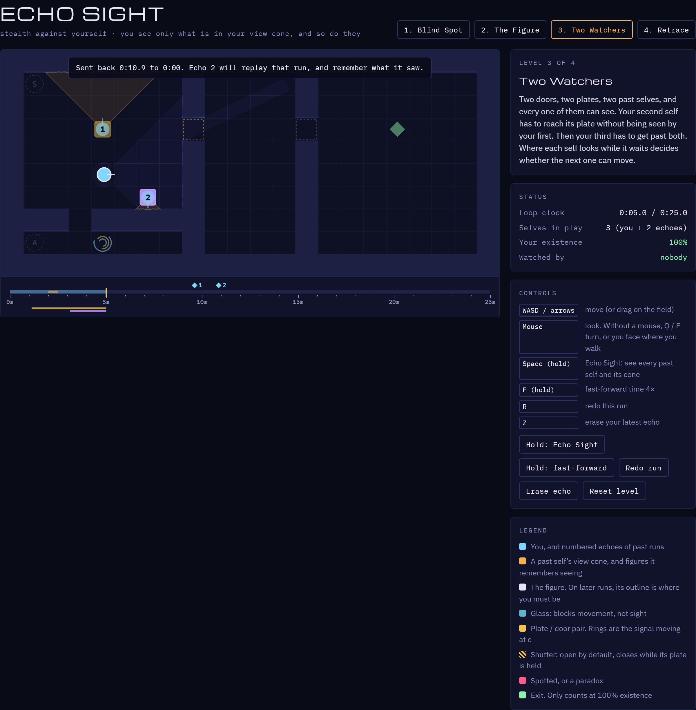

Puzzle · 7 levels
Causal Diamond
Team up with your past selves, beat light-speed signals, and keep the timeline consistent. A paradox doesn't end the game. It splits you into a 50/50 superposition.
Play →

Stealth · 4 levels · early test bed
Echo Sight
Stealth against yourself. Every past self must see exactly what it remembers seeing: never be seen where it saw no one, and be wherever it saw someone. Best with a mouse.
Play →